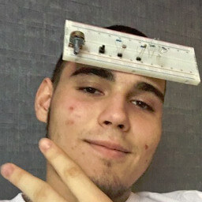

About US
Author
Kristian Varga - Danko
Christian is the heir apparent to Garad, chieftain of the Frostwolf clan, in the years prior to the First War. He cared deeply about the world and those living in it. This sensitivity could have been the signs of being a Shaman, but for Durotan it was just the way he was. During a Kosh'harg festival in Nagrand, he met a Blackrock orc named Orgrim, son of Telkar Doomhammer, and the two became fast friends despite belonging to different clans. Durotan was also brought to the "sacred mountain" of Oshu'gun by request of the ancestors, seeking to test whether he could become a shaman as well as chieftain of his clan; alas, he did not see the ancestors, though he knew they were there somehow.